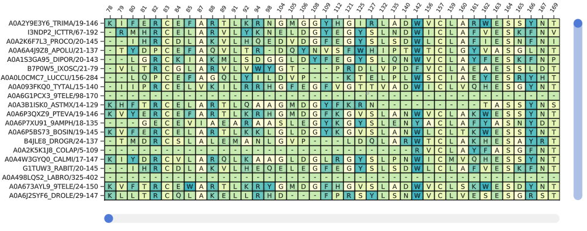
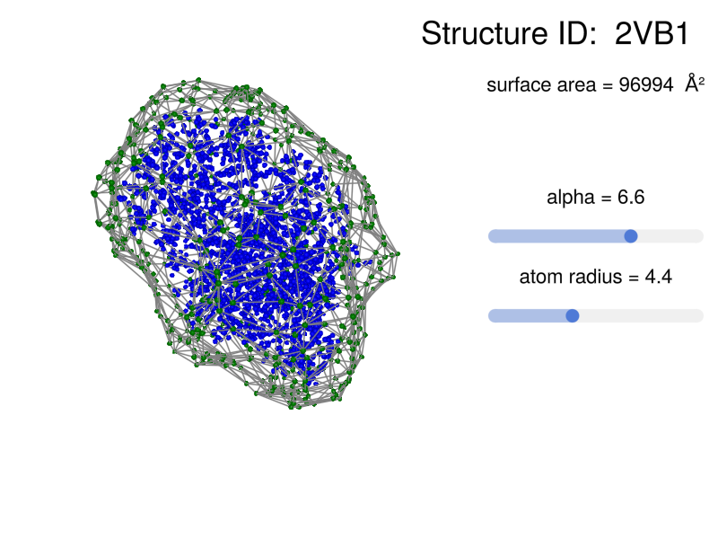

Usage
The main plotting functions are plotstruc and plotmsa, along with their mutating versions, plotstruc! and plotmsa!. The mutating functions allow the user to add multiple plots to the same Figure, using grid positions.
Structure
There are different representations for protein structures, including "ball and stick" (:ballandstick), "covalent" (:covalent), and "space filling" (:spacefilling). The default Makie backend is GLMakie.jl, but some of the functions work with WGLMakie.
using BioMakie
using GLMakie
using BioStructures
struc = retrievepdb("2vb1") |> Observable
# or
struc = read("2vb1.pdb", BioStructures.PDB) |> Observablefig = Figure()
plotstruc!(fig, struc; plottype = :ballandstick, gridposition = (1,1), atomcolors = aquacolors, resolution = (350,600))
plotstruc!(fig, struc; plottype = :covalent, gridposition = (1,2), resolution = (350,600))Multiple Sequence Alignments
Multiple Sequence Alignments (MSAs) are plotted using a matrix of residue letters, and a matrix of values for the heatmap colors. If only a matrix of letters is provided as input, colors will be automatic. MSA objects from MIToS have specific support, as well as Fasta files loaded with FastaIO.jl or FASTX.jl.
To view a multiple sequence alignment, use the plotmsa or plotmsa! function with a Pfam MSA or fasta file.
using FASTX
reader = open(FASTX.FASTA.Reader, "PF00062.fasta")
msa = [reader...] |> Observable
close(reader)
# or
using MIToS
using MIToS.MSA
msa = MIToS.MSA.read("pf00062.stockholm.gz", Stockholm)
fig = plotmsa(msa; colorscheme = :tableau_blue_green, resolution = (700,400))
Additional examples
Alpha shapes can be used to visualize the surface of a protein structure

This page was generated using Literate.jl.